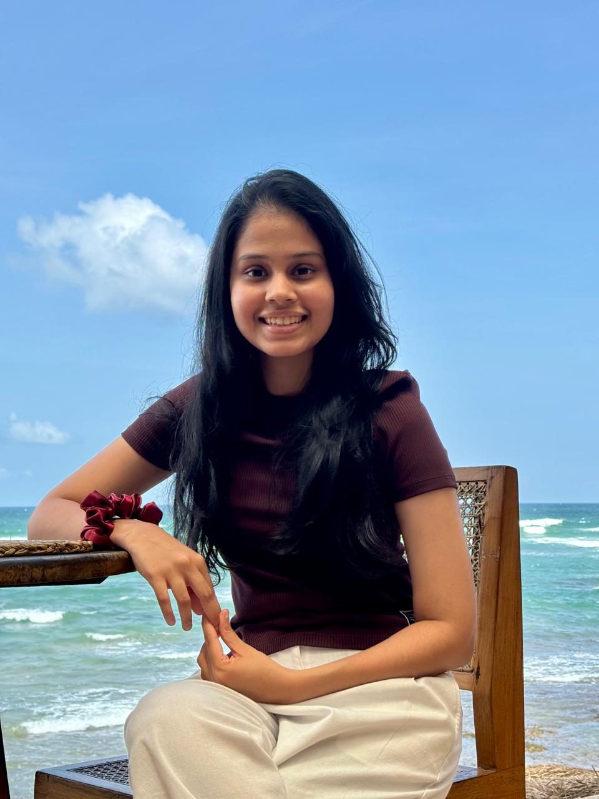

BSc (Hons) Computing
Coventry University, United Kingdom
Computing Undergraduate

CONFIDENTIALA Computing student with hands-on experience building mobile apps in SwiftUI and Flutter using modern development practices. Strong in OOP, cross-platform development, web development with REST APIs, and Git across the full cycle from design to testing. Detail-oriented, quick to learn, and focused on reliable, user-focused mobile software.
Each project, logged and filed. Hover a file to un-redact the detective's note.
A mobile-based clinical decision support system that assesses canine anxiety severity in domestic dogs.
Note:
A native iOS pet-adoption app connecting shelters with adopters.
Note:
A complete iOS front end for a clinic management application.
Note:
A game-menu application bundling 5 games.
Note:
The instruments of the trade — pinned to the board.
Education & certifications, logged in chronological order.
Coventry University, United Kingdom
NIBM, Sri Lanka
NIBM, Sri Lanka
Have a case that needs solving? Leave a tip and I'll follow the lead.
The fastest way to reach me is by email. Drop a message any time — every lead gets a reply.
thirandidesilva2002@gmail.com